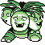

The Red/Blue Ultimate Team
To decide what your ultimate team will be for Pokemon Red/Blue to conquer any situation without troubles you first need to figure out the percentage of Types in the Kanto Region, and luckily I did that just for you.

Next listed the weaknesses next to each type. For each time there was a type that had a particular weakness I added for that particular type.
I bolded the most relative typings that you need for the Red/Blue games. After this it was just as simple as picking out the best pokemon for the each type. Now some Pokemon I had to exclude I obviously picked each pokemon for there type and for there ability to use a move for that type.But not all pokemon had the ability to use a move of there same typing. Examples of these would include the fossil pokemon Omaster and Kabutops.
Now without further ado here is my list of the ultimate team.
A lot of the Pokemon I picked for the team are dual types that fulfill the needed typing for the best team.Now heres the reasoning for my pick of these specific Pokemon. I'm going be going over mostly the non-legendary team since the legendary team is kinda self explanatory.
Exeggutor - Exeggutor is a Grass/Psychic Pokemon so this fulfills the vast need for a Grass type for Red/Blue. Exeguttor learns Solar Beam in his pre-evoluionary form as well as leech seed, both great Grass type moves. Exeguttor also can learn Psychic from TM. So this fulfills the Psychic type necessity for the team. Exeguttor also has 530 base stat, with a 125 Special stat. You can pick up his pre-evolutionary form exeggcute in the Safari Zone.
Lapras - Lapras fulfills the requirement for an Ice typing. Lapras has a high base stat of 535 with an incredible 130 HP base stat. Lapras also naturally learns Ice Beam at lv. 38 and can learn Blizzard with TM 14. Lapras can be found in Silph Co.

Jolteon - The most useful type in Red/Blue is Electric, and the best pokemon for the job would be Jolteon. Jolteon has one of the highest base stats for Electric pokemon at 525. With a Special stat of 110 and a SPD stat of 130. Jolteon can learn Thunder Wave and Thunder naturally and can learn Thunderbolt with TM 24. You can get his pre-evolutionary for Eevee in Celadon City and even the stone to evolve them in the department store.
Golem/Rhydon - Now I had some difficulty deciding who to pick for the dual typing of Ground/Rock and Fighting. For the former Golem and Rhydon both have pretty similar base stats. They can both learn Earthquake and Rock Slide so because of this I'll let you decide which one you shall pick. You can find Geodude in the first cave you encounter, and you can find rhyhorn in the Safari Zone.
Hitmonlee/Machamp - Now for the fighting type you see I put Hitmonlee and Machamp, and you probably thought, "why isn't Hitmonchan there". Well simply his move pool for fighting type is limited. Hitmonchan naturally learns Counter, which is only a move bases off the opponent hitting you first, so not a great choice even if it does double the damage back to your opponent. He can also learn TM 17 Submission and TM 17 Seismic Toss. So for this very reason I decided not to include him in my list. On the contrary to his counterpart Hitmonlee. Hitmonlee can learn Double Kick, Rolling Kick, Jump Kick, and High Jump Kick naturally. As well as TM 17 Submission, TM 18 Counter, and TM 19 Seismic Toss. This wide variety of fighting type moves help you conquer any Ice, Normal, or Rock type you face. Hitmonlee has a base stat of 455 which is low compared to the other Pokemon on the team, but he does hae a base ATK of 120 which makes up for the low base stat. Now for Machamp. Machamp has a base stat of 505 with a ATK stat of 130. Machamp can learn Karate Chop, Low Kick, Seismic Toss and Submission naturally as well as TMs 17, 18, and 19. You can find Machop in Rock Tunnel.


Aerodactyl - Aerodactyl is a dual Flying/Rock type, but for this team we need his Flying type. Aerodactyl has a base stat of 515 with ATK stat at 105 and SPD being 130. Aerodactyl can learn Wing Attack natural and can be taught TM 43 Sky Attack which is the strongest Flying type attack in the game. You can grab the Amber Fossil at the Pewter City Museum.
After crunching through the numbers and picking out the best Pokemon for the ultimate team this is what I came up with. Try it out and replay Red/Blue for some nostalgia. Tell me what you think and what you think the Ultimate team is for Red/Blue.